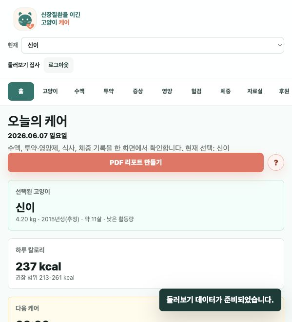
홈 대시보드
screenshots/02-dashboard-desktop.png
신장질환을 이긴 고양이 케어 · 2026-06-07 로컬 데모 기준
로컬 DB 미실행 Docker daemon/localhost:5432 접근이 불가하여 자료실 글 등록, 댓글 수정/삭제, 관리자 승인 API의 실제 DB 저장 플로우는 이번 자동 스모크에서 제외했습니다. Render 운영 DB 환경에서 별도 확인 권장.

screenshots/02-dashboard-desktop.png
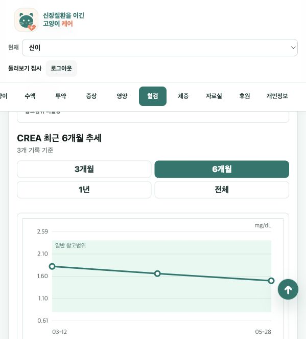
screenshots/12-labs-trend.png
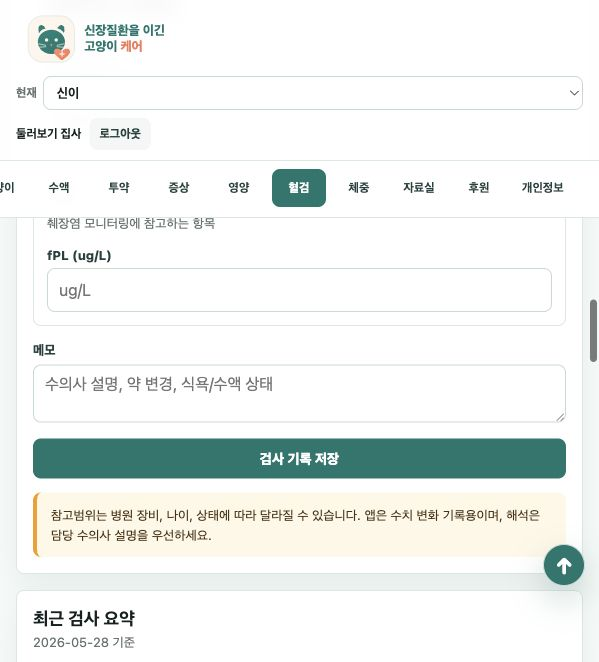
screenshots/19-mobile-labs.png
첫 화면에 회원가입, 로그인, 데모 진입이 표시됩니다.
데모 데이터로 대시보드 진입 성공
오늘의 케어, PDF 리포트, 선택 고양이와 요약 카드 표시
대시보드에서 PDF 리포트 설정 패널 열림
오늘의 케어 완료/되돌리기 동작 정상
프로필 목록, 추정 연도, BCS 도움말, 건강상태 옵션 표시
등록된 고양이 수정 폼 진입 정상
재검증 통과: 수액 종류, 예정 일정, 등록 계획과 수정 버튼 표시
수액 예정 일정 완료/되돌리기 정상
최종 재검증 통과: 빠른 선택 셀렉트가 이름(오메가3), 종류(영양제), 체크리스트와 동기화됩니다. 직접입력 검증은 현재 값 property 기준으로 확인했습니다.
투약 계획 수정 진입과 완료/되돌리기 정상
구토/설사 횟수와 색, 증상 기록 목록 표시
재검증 통과: 식품 검색, DM 분석, 혼합 급여, 간식 칼로리 계산 화면 표시
신장·전해질, 췌장 fPL, pH/K/Ca/Na와 기간 필터 확인
재검증 통과: 체중 기록, 전체 기간 그래프 필터와 기록 목록 표시
후원 문구와 계좌, 복사 버튼 표시
개인정보 처리 안내와 탈퇴 버튼 표시
데모/비회원에게 자료실 내용이 노출되지 않음
가입 신청 승인과 자료실 승인 관리자 패널 표시
모바일에서 혈검 메뉴 진입, 활성 탭과 최상단 버튼 확인
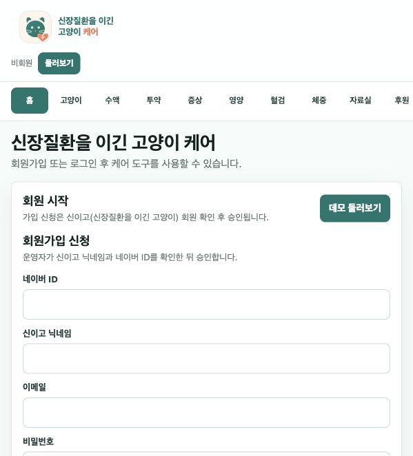
01-auth-start.png
02-dashboard-desktop.png
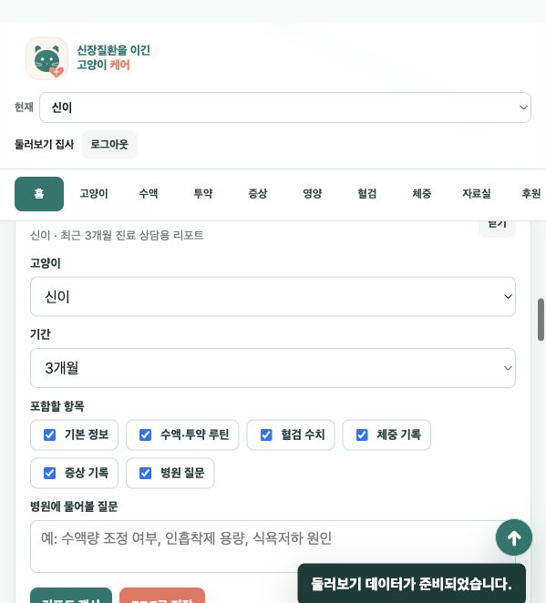
03-dashboard-report-panel.png
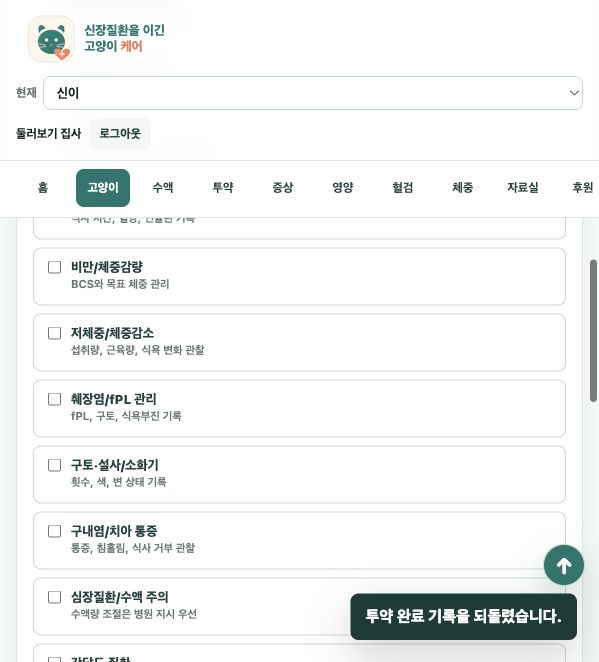
04-cats-profile.png
06-fluid-schedule.png
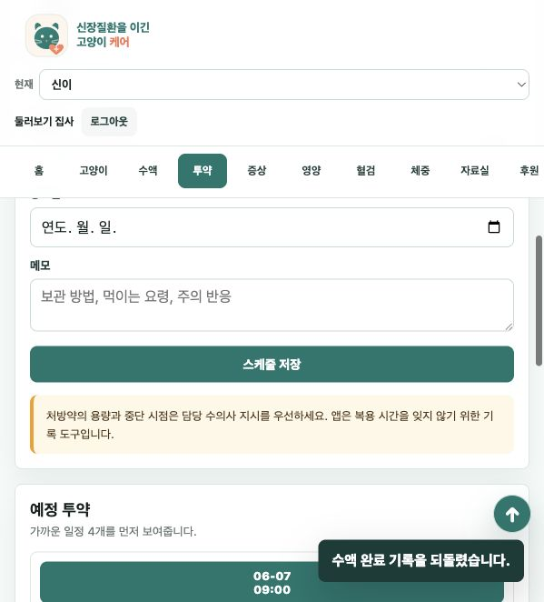
08-medication-schedule.png
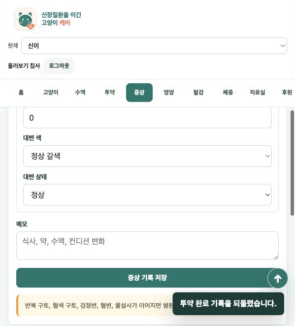
09-symptoms.png
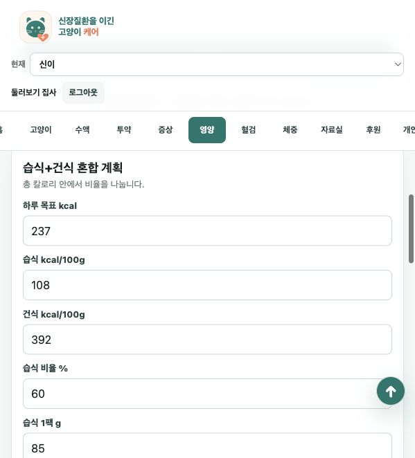
11-nutrition.png
12-labs-trend.png
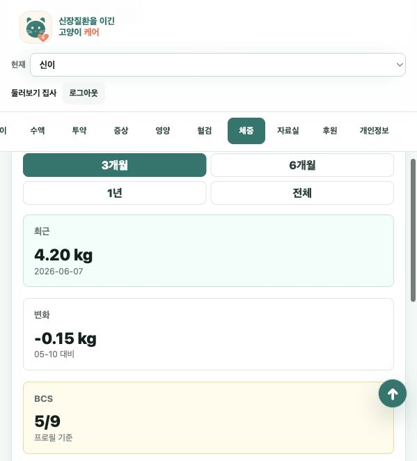
14-weight-trend.png
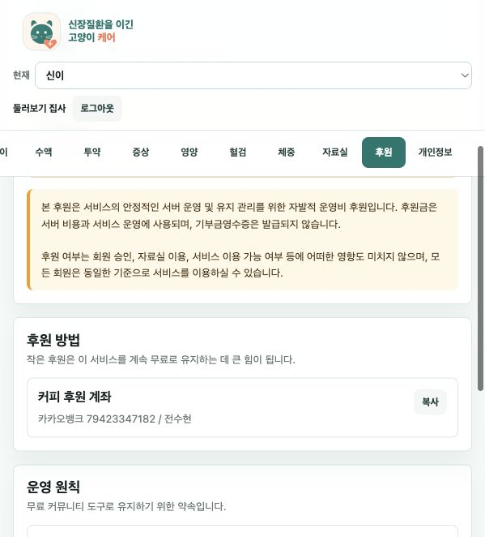
15-support.png
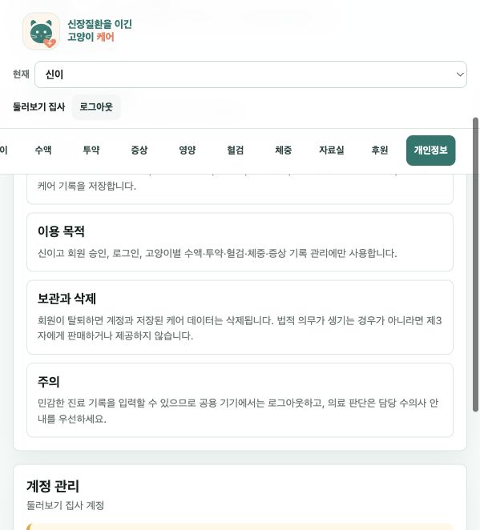
16-privacy.png
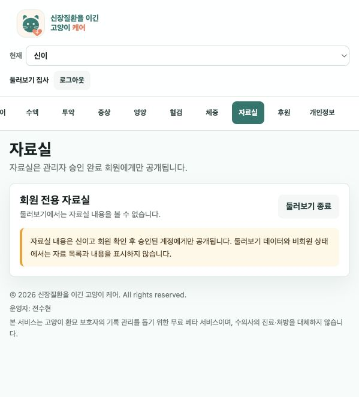
17-board-locked.png
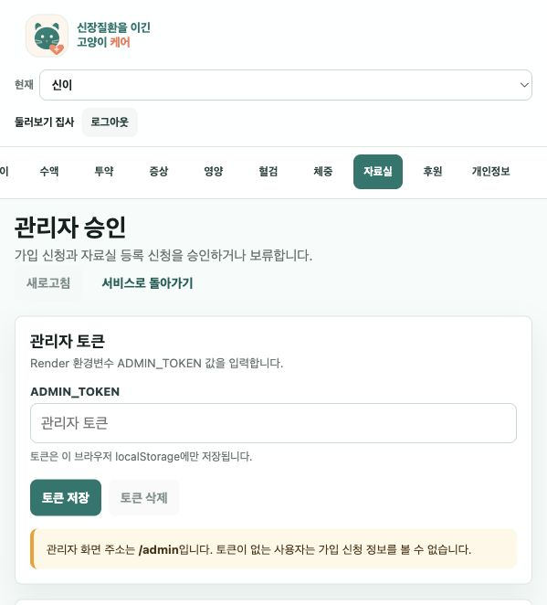
18-admin.png
19-mobile-labs.png
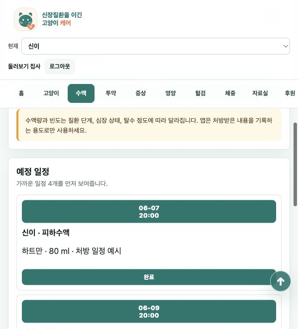
20-fluid-recheck.png
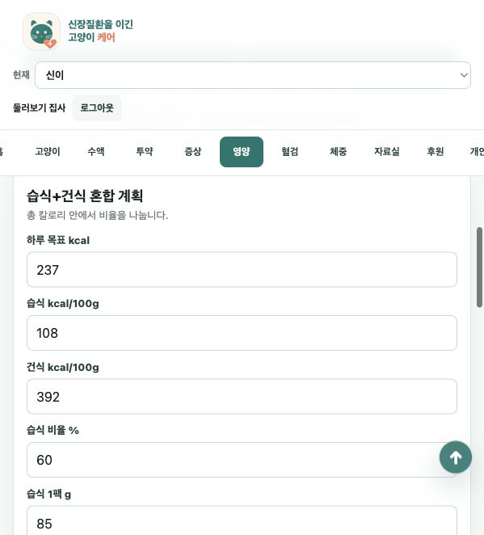
21-nutrition-recheck.png
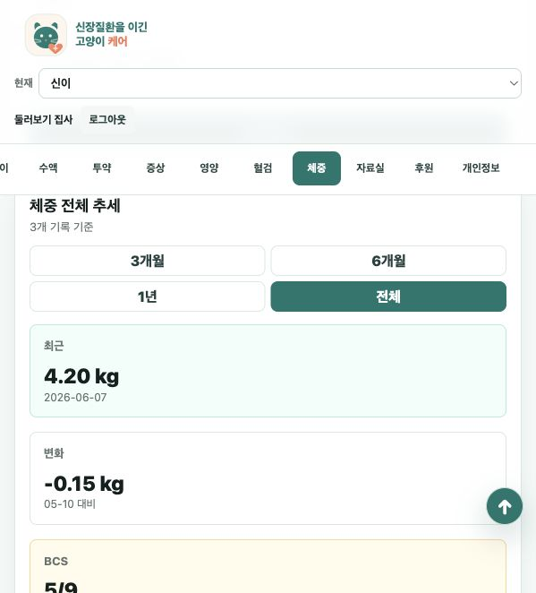
22-weight-recheck.png
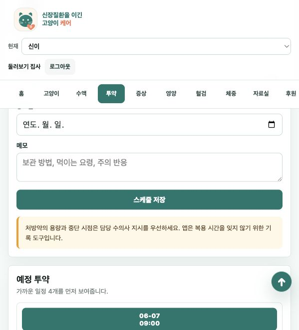
23-medication-final-recheck.png
{kind=link}
{kind=link}
{kind=link}
{kind=link}